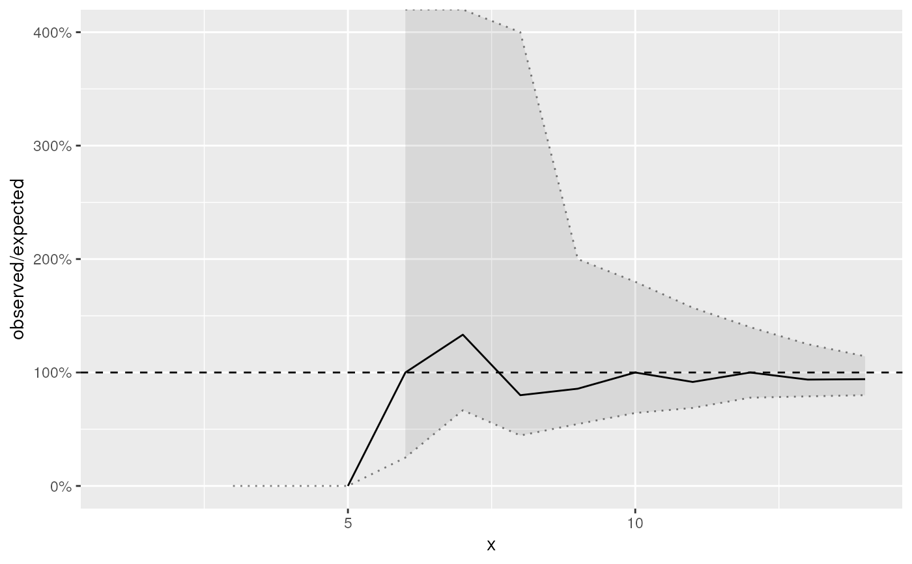

Plot the results from a distribution check
Source:R/plot_distribution_check.R
plot.distribution_check.RdPlot the results from a distribution check
Usage
# S3 method for class 'distribution_check'
plot(x, y, ..., n = FALSE, scales = "fixed")See also
Other utils:
generate_data(),
plot.dispersion_check()
Examples
library(INLA)
set.seed(20181202)
model <- inla(
poisson ~ 1,
family = "poisson",
data = data.frame(
poisson = rpois(20, lambda = 10),
base = 1
),
control.predictor = list(compute = TRUE)
)
fdc <- fast_distribution_check(model)
plot(fdc)
#> Warning: Removed 3 rows containing missing values or values outside the scale range
#> (`geom_line()`).
#> Warning: Removed 2 rows containing missing values or values outside the scale range
#> (`geom_line()`).
